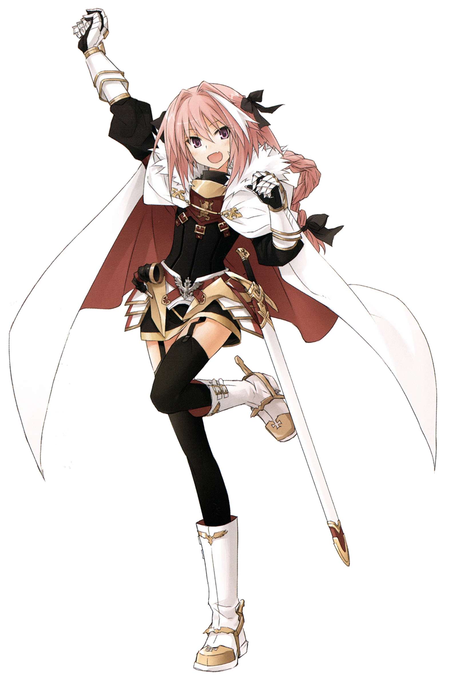

Verdadeiro nome: Astolfo
Breve Mito
Um dos Doze Paladinos de Carlos Magnoele é filho de um rei inglês. Entre os Doze Paladinos de Carlos Magno, Astolfo é considerado o mais bonito, eternamente otimista e completamente desprovido de sentido. Como dizem as lendas, Astolfo era o homem das mulheres. Como primo de Rolando, Astolfo está incluído entre esses doze dito isso, Astolfo era famoso como "fraco" nas lendas.
Astolfo criou muitas lendas, pois era um aventureiro que voou para todo o mundo e até chegou à Lua no final. Através de suas jornadas, ele ganhou vários Códigos Místicos, como sua flauta, seu grimório e sua lança dourada brilhante. Astolfo deu origem a várias lendas nas costas de montarias como um grifo e o famoso Rabicano, mas particularmente famoso entre eles é algo inconcebível para este mundo - o hipogrifo.
Embora muitos sejam os contos gloriosos de Astolfo, diz-se que ele cometeu tantos erros. Ele foi continuamente derrotado em torneios de equitação, foi vítima de muitas armadilhas taumatúrgicas e até perdeu – em questão de horas – a razão de ter pego a lua. No entanto, Astolfo nunca vacilou; ele não parecia considerar o fracasso ou a derrota como erros em primeiro lugar.
Breve Função na Historia
Rider é convocado por Celenike Icecolle Yggdmillennia com uma garrafa de vidro contendo manchas deixadas por algum tipo de líquido como catalisador em uma convocação múltipla de Servos. Quando convocado pela primeira vez, ele é o único a mostrar um rosto largo e sorridente para os Mestres. Ele é rápido em se apresentar aos outros Servos, esquecendo todo o tato em revelar instantaneamente seu nome sem permissão e, posteriormente, ser repreendido por usar o nome verdadeiro de Archer em vez de seu nome de classe. Depois que os Mestres e Servos reunidos começam a sair, ele fica extremamente satisfeito quando seu Mestre se oferece para lhe dar um passeio pelo castelo. Ela revela que não vai forçá-lo a entrar em forma de espírito para conservar energia e até mesmo preparar um quarto para ele. Ao sair para a cidade, apesar do controle estrito de seu Mestre, ele usa uma roupa simples projetada para os homúnculos para não chamar a atenção.
Logo após Kairi Sisigou e Saber of Red lutarem contra vários golems de Caster of Black, um homúnculo escapa dos tanques de armazenamento de energia mágica antes que ele possa ser usado como material de pesquisa. Enquanto o homúnculo tenta desesperadamente escapar, Rider o encontra, preocupado com seu estado e determinado a ajudá-lo de alguma maneira. Enquanto o homúnculo murmura inaudivelmente por ajuda e desmaia de exaustão, Rider começa envolvendo o homúnculo em sua capa e levando-o para um local seguro. Rider evita seu próprio quarto devido ao seu Mestre chamando-o constantemente, e ele encontra dois homúnculos procurando o fugitivo por ordem de Caster. Rider nega tê-lo visto e pondera em quem poderia confiar sobre a situação. Descontando Saber, Lancer e Berserker, ele decide sobre Archer. Quando Archer percebe as circunstâncias instantaneamente, ele usa seu conhecimento médico para examinar o homúnculo.
Archer informa a Rider que o homúnculo não pode viver uma vida normal, dando-lhe três anos para viver no máximo em seu estado. Rider fica deprimido com a notícia, e Archer pergunta por que ele salvou o homúnculo. Ele é capaz de responder instantaneamente que era simplesmente porque era o que ele desejava fazer, e ele deixa a pergunta sobre o que fazer com Caster perseguindo o homúnculo no ar. Archer lhe empresta o quarto por enquanto e, antes de sair, pergunta a Rider se ele verá a tarefa de cuidar do homúnculo até o fim. Observando o quão fraco e indefeso o homúnculo parece, ele não pode acreditar que seria capaz de escapar por conta própria ou sobreviver mesmo que escapasse. Embora Rider desapareça muito antes de três anos, ele planeja proteger e ajudar o homúnculo até sentir que é aceitável.
Ele cutuca o homúnculo já acordado e tenta iniciar uma conversa que só é atendida por um silêncio tímido. Na tentativa de acalmá-lo, ele gentilmente abraça o homúnculo em seu peito enquanto diz que ele está lá para ajudá-lo a realizar seu desejo. Quando o homúnculo vem pedir para Rider salvá-lo, Rider responde instantaneamente, respondendo ao olhar duvidoso do homúnculo com um sorriso despreocupado. Rider promete salvá-lo não importa o obstáculo como um Espírito Heroico, dizendo-lhe para deixar todo o planejamento para aquele que não tem controle mais do que qualquer outra pessoa.
Após a conclusão da Grande Guerra do Santo Graal, Rider permanece convocado no mundo, pois seu contrato com Sieg nunca foi rescindido. Ele começa a viajar pelo mundo e se encontra com os outros sobreviventes da guerra para acompanhar o que eles estão fazendo, como se reunir com Fiore Forvedge Yggdmillennia em sua nova casa em Nova York. Ele pretende manter um registro permanente dos eventos devido à sua memória fraca. Após suas entrevistas com os outros sobreviventes da guerra, ele faz uma viagem ao Oriente Médio para investigar como Amakusa Shirou obteve o catalisador de Semiramis.